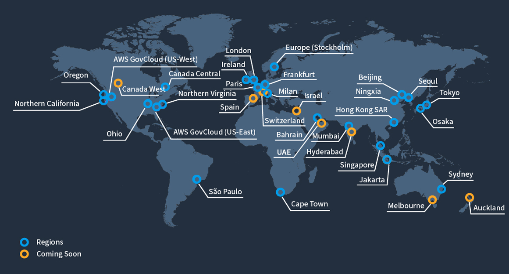

Infraestructura
Amazon Web Services (AWS) es una plataforma de
servicios en la nube que cuenta con una amplia
presencia en todo el mundo. AWS opera en 25 regiones
geográficas y 81 zonas de disponibilidad en todo el
mundo. Cada región de AWS es una ubicación
geográfica en la que se encuentran los centros de
datos de AWS. Cada región de AWS está completamente
aislada de las demás, lo que significa que los
recursos en una región no pueden acceder a los
recursos en otra región, a menos que se configure de
manera específica.
AWS también ofrece una serie de servicios globales,
que no están restringidos a una sola región. Estos
servicios incluyen Amazon Route 53 (un servicio de
DNS), Amazon CloudFront (un servicio de distribución
de contenido), AWS Identity and Access Management
(IAM) y muchos otros. En general, la amplia
presencia geográfica de AWS permite a las empresas
desplegar sus aplicaciones y servicios en una amplia
variedad de ubicaciones en todo el mundo, lo que les
permite ofrecer una experiencia de usuario rápida y
confiable a sus clientes en todo el mundo.
